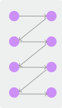
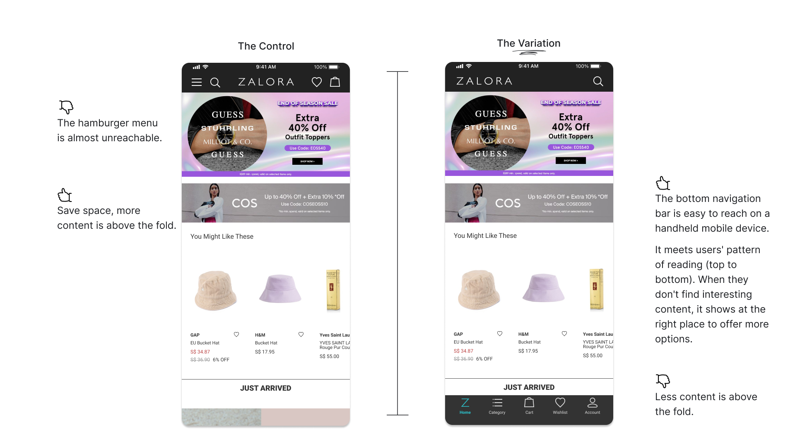
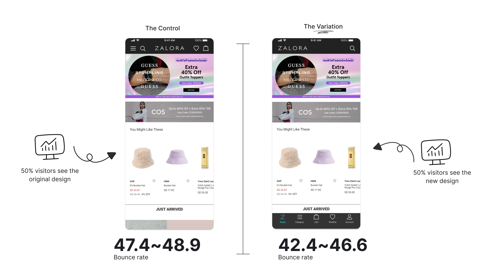
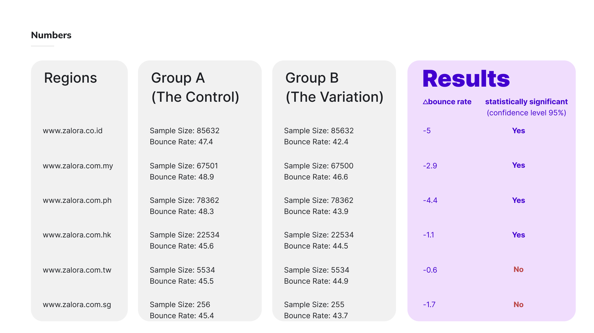

Reduce Bounce Rate by Re-Positioning Navigition
Mobile Design · AB Test
Duration
2 Weeks
Role
UX Designer/ Engineer
Tools
ReactJs, HTML, CSS, Google Analytics, Sketch
Challenge
The team observed a higher homepage bounce rate in Malaysia, Indonesia & Philippines
compare with other regions. And the team wanted to explore and validate ideas to reduce
the bounce rate.
Zalora, a fashion e-commerce platform in SEA. Malaysia, Indonesia & Philippines are the three fastest-growing markets, and more, and more than 85% of their traffic is the mobile web platform. In MY, ID & PH, the rounce rate was around 48%. Whereas, other regions, Hong Kong, Taiwan & Singapore, the bounce rate of mobile web homepage was around 45%.
Hypothesis
A more accessible navigation would enable user to discover more interesting content.
For new users, if they didn’t see interesting content in the content above fold, they would
left the site. Will moving the navigation to the bottom of the screen encourages users to
explore more products?
Hero Banner & Category
Top 2 events on homepage

Reading pattern
Thumb zone
The design
Bottom Navigation
Based on our hypothesis, I came up with the new homepage design. Instead of hiding the
product categories and other action in a hamburger menu, I used bottom navigation to show
these essential actions up front.

The result
AB Test
To validate if the new design would reduce the bounce rate of the homepage, we conducted AB
tests on all 6 regions. We used the original design as the control group and the new design
as the variant and splited the traffic into 50/50.

As a result, the variation with bottom navigation made the bounce rate is 2.9% - 5%
lower in Malaysia, Indonesia and Philippinees.

Takeaways
Although the result shows the design helps to reduce the bounce rate of the homepage, more
data could be collected to understand the users' bahvior.
- Does the new design has the same effect on new users and existing users? If not, what's the difference?
- For users who stay on the homepage, what's their first interaction with the app?
- Where does the traffic of homepage come from? Does it has an impact on how people behave on the homepage?